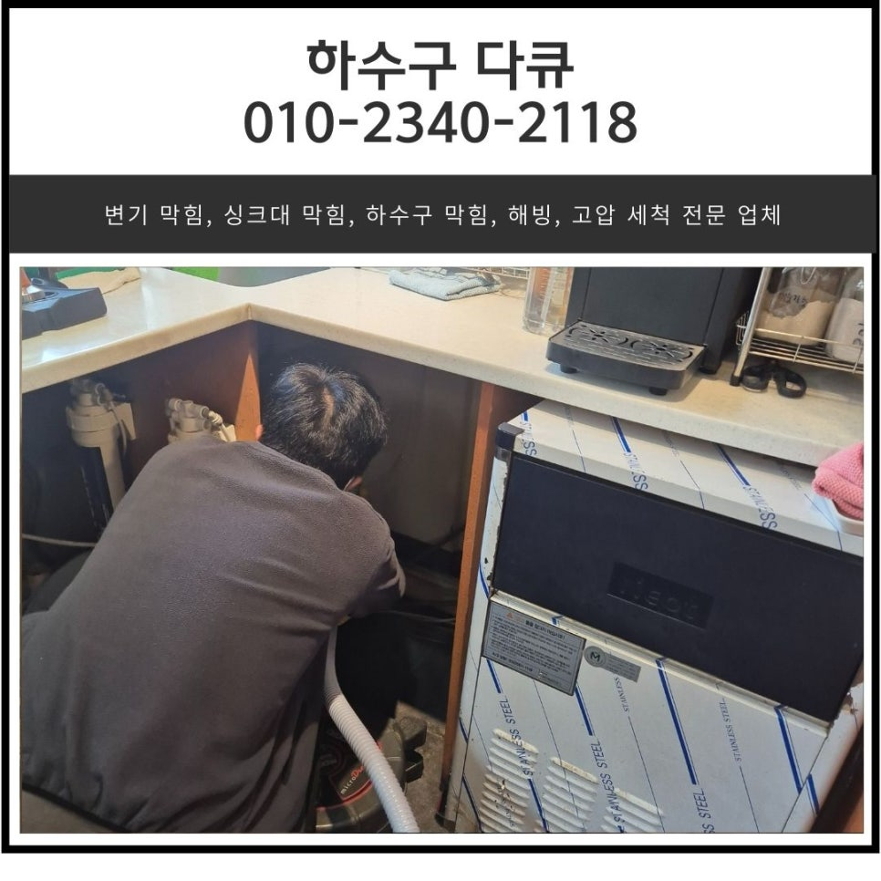
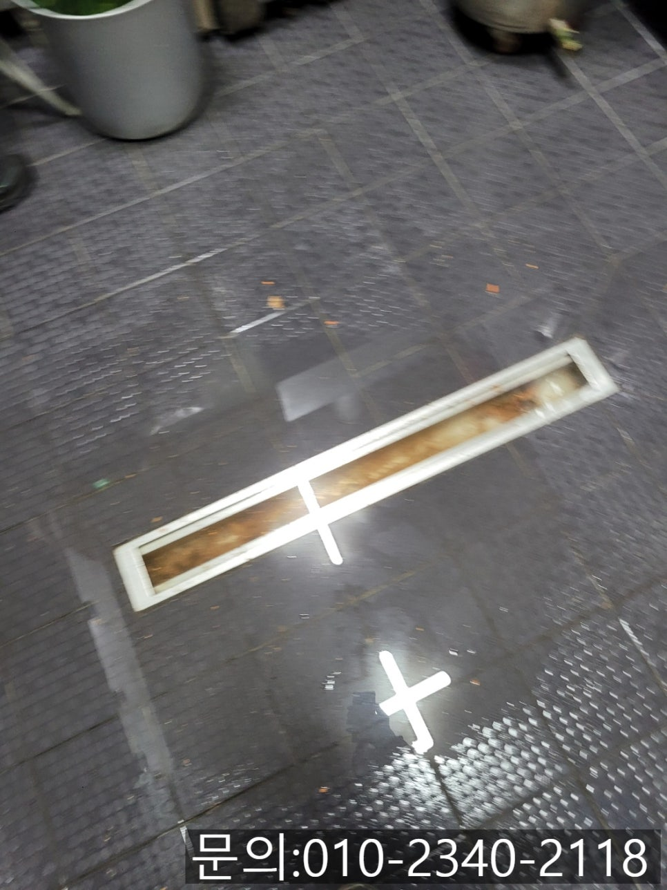
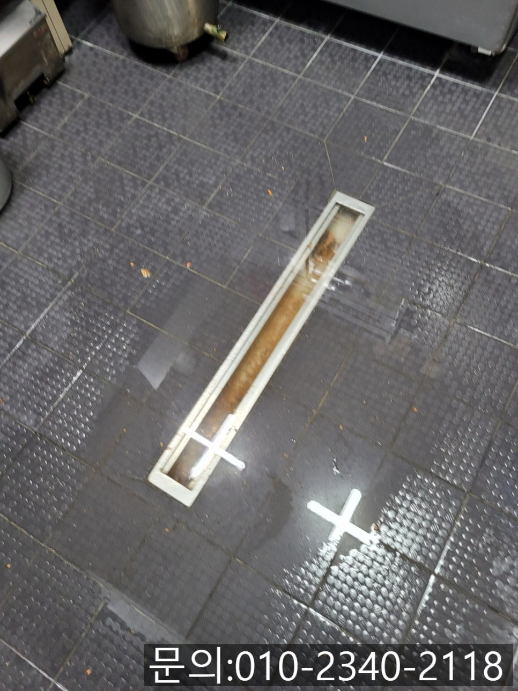
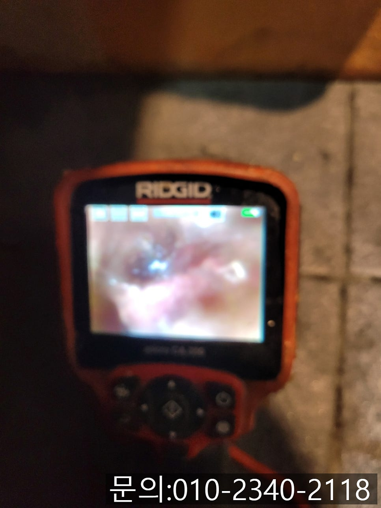
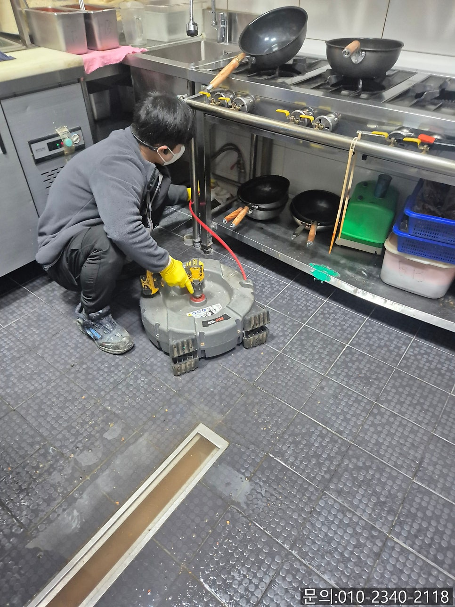
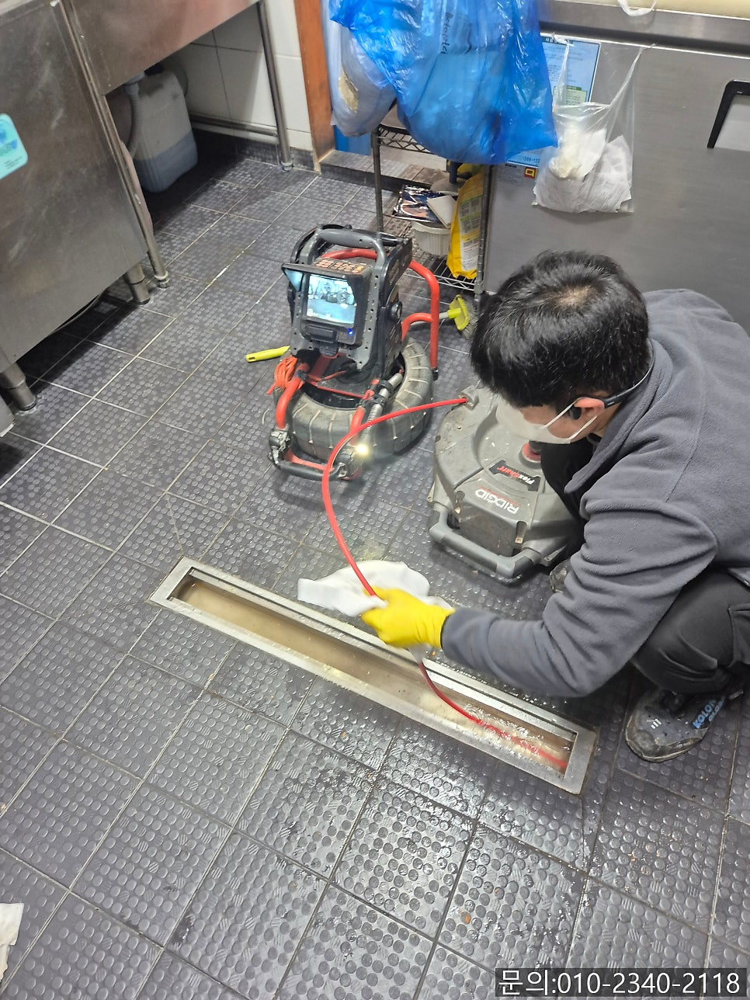
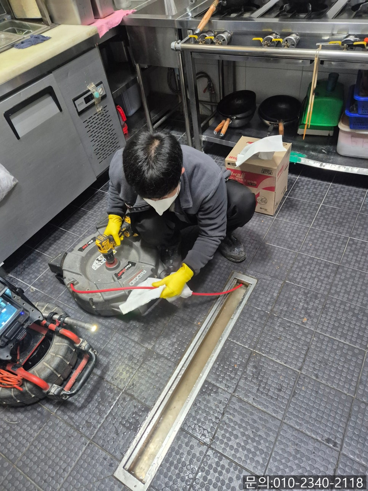

🏠 동탄동 식당 하수구 역류 화성 동탄 주방 바닥 하수도 막힘 해결하는 업체
화성 싱크대막힘 전문 시공 후기

📋 작업 개요
- 위치: 화성
- 서비스 유형: 싱크대막힘, 하수구막힘, 배관막힘, 역류해결, 뚫는업체, 배관청소, 고압세척
- 작업 일시: 2025. 3. 25. 16:23
- 업체명: 하수구수사대 (010-5615-2118)
🔍 문제 상황
안녕하세요.
동탄동 식당 하수구 역류, 화성 동탄 주방 바닥 하수도 막힘 해결하는 업체 하수구 다큐입니다.
동탄동 식당 하수구 역류 문제는 식당 운영에 큰 문제를 미칠 수 있습니다.
주방에서 사용한 물이 원활하게 배수되지 않아 동탄동 식당 하수구 역류가 발생하게 되면 악취가 발생할 뿐 아니라 음식을 조리할 수 없어 영업에 차질이 생길 수 있습니다.
오늘은 식당 하수구 역류의 원인에 대해 알아보고, 화성 동탄 주방 바닥 하수도 막힘 해결하는 업체 하수구 다큐가 현장에 방문해 해결하고 온 내용도 소개해 드릴게요.
하수구 역류의 가장 큰 원인은 음식물 찌꺼기와 기름때입니다.
식당 주방에서는 다양한 음식을 많이 조리하다 보니 그만큼 음식물 찌꺼기와 기름이 발생하게 되는데요.
아무리 관리한다고 해도 기름 성분과 작은 음식물 찌꺼기가 배관을 따라 흘러들어가 조금씩 쌓이게 되면서 굳어 하수구를 막히게 합니다.

🔎 원인 분석
💡 전문가 진단: 정밀 진단 장비를 사용하여 슬러지의 고착 여부를 판명하고 타격/세척 작업을 실시했습니다.
또 음식을 조리하거나 손님들이 식사를 할 때 사용했던 그릇을 세척할 때 사용되는 세제나 비누 역시 조금씩 배관에 쌓여 막힘이 발생할 수 있습니다.
간혹 주방에서 일을 하시다가 실수로 수세미를 떨어트려 배관으로 들어가거나 비닐 등 각종 이물질이 들어가 막힘을 발생하기도 합니다.
다양한 이유로 인해 식당 하수구 막힘이 발생하는데요.
화성 동탄 주방 바닥 하수도 막힘 해결하는 업체 하수구 다큐가 뚫는 방법을 설명해 드릴게요.
점심 식사를 하고 있는데 전화 한 통을 받았습니다.
동탄에 위치한 한식 전문 식당인데 주방 바닥에서 물이 역류하고 있다는 다급한 전화였습니다.
3시부터는 브레이크 타임이다 보니 그때 와서 해결해달라는 전화였어요.
식당에서 핵심적인 역할을 하는 곳은 주방인데, 역류로 인해 주방을 사용할 수 없다면 금전적인 손해로 이어질 수 있다 보니 신속하게 장비를 챙겨 현장으로 달려갔습니다.

🔧 작업 과정
브레이크 타임이라 주방을 사용하고 있지 않는데도 바닥에 역류한 물이 제대로 흘러가지 못하는 상태였어요.
그뿐만 아니라 싱크대에서도 역류가 발생하고 있어 주방 하수구 점검을 시작했습니다.
바닥과 싱크대 배관을 살펴보니 기름 슬러지로 인해 꽉 막혀 통수가 되지 않는 상태였습니다.
고객님께 배관의 상태와 작업 방법, 비용, 소요 시간까지 자세히 설명해 드린 다음 작업을 진행하기로 했어요.
우선 싱크대와 연결된 배관 청소부터 시작하기로 했습니다.
주방에서 기름 사용량이 많다 보니 기름 슬러지가 많이 쌓인 상태로 플렉스 샤프트 장비를 사용해 내벽에 붙어있는 기름 슬러지를 제거하는 작업을 진행했어요.
그런 다음 바닥에 위치한 배관 청소도 플렉스 샤프트 장비를 사용해 청소하는 작업을 이어갔습니다.
플렉스 샤프트 장비의 경우 얇은 노즐이 배관 내부로 진입해서 이물질을 제거하는 역할을 하는데요.
노즐 끝에 달려있는 체인이 본체에 연결되어 있는 전동드릴의 회전하는 힘을 전달받아 빠르게 회전하면서 이물질을 타격해 제거하는 작업을 합니다.
워낙 오랜 시간 많은 양의 기름 슬러지와 음식물 찌꺼기가 쌓여있다 보니 내시경 카메라로 꼼꼼하게 위치를 파악해가며 작업을 이어갔어요.
한참을 반복해서 청소를 진행하자 이물질이 모두 제거되고 깨끗해진 배관을 확인할 수 있었습니다.
깔끔하게 청소된 배관의 내부를 고객님께 보여드리고 장비를 정리하는데, 고객님께서 홀에 있는 작은 주방도 같이 청소해달라고 요청하셨어요.
가게 홀에도 작은 싱크대가 있었는데요.


✅ 작업 완료
막힘이 발생한 건 아니었지만 청소하는 김에 한 번에 다 해버리는 게 좋을 것 같다고 추가 작업을 요청하셨습니다.
주방에 비하면 배관이 깨끗하긴 했지만 음료를 만드는 공간이다 보니 커피 찌꺼기와 기름 성분으로 인해 배관이 좁아지고 있는 상황이었어요.
주방과 마찬가지로 플렉스 샤프트 장비를 이용해 말끔하게 청소해 드리고, 통수 테스트까지 진행한 다음 진짜 작업을 마무리할 수 있었습니다.
경기도 화성시 동탄대로 677-10 7층 715-A10호




⚠️ 주방 싱크대 배관 막힘 예방 수칙
- ✅ 기름기가 묻은 식기나 프라이팬은 설거지 전 키친타올로 반드시 기름때를 닦아내세요.
- ✅ 주기적으로 싱크대 개수대에 뜨거운 물을 가득 받아 한 번에 내려 배관 내부 기름을 씻어내세요.
- ✅ 배수구 거름망을 미세한 필터로 사용하시고 음식물 찌꺼기가 틈으로 새어 들지 않게 관리하세요.
- ✅ 베이킹소다와 식초를 뜨거운 물과 함께 일주일에 한 번씩 부어주면 배관 살균과 막힘 예방에 좋습니다.
💡 핵심 정리
- 확실한 장비 작업(내시경 점검 및 샤프트 스케일링)으로 원인을 뿌리 뽑습니다.
- 작업 후 1년 이내에 동일한 부위 재발 시 100% 무상 A/S 서비스를 보장합니다.
- 서울 · 경기 · 인천 전 지역에 24시간 언제든 긴급 출동할 수 있도록 항시 대기 중입니다.
❓ 자주 묻는 질문 (FAQ)
🚨 화성 싱크대막힘 문제로 고민이신가요?
정확한 원인 진단과 확실한 시공으로 재발 없는 해결을 약속드립니다.
24시간 긴급 출동 | 서울 · 경기 · 인천 전지역 | 1년 내 재발 시 무상 A/S